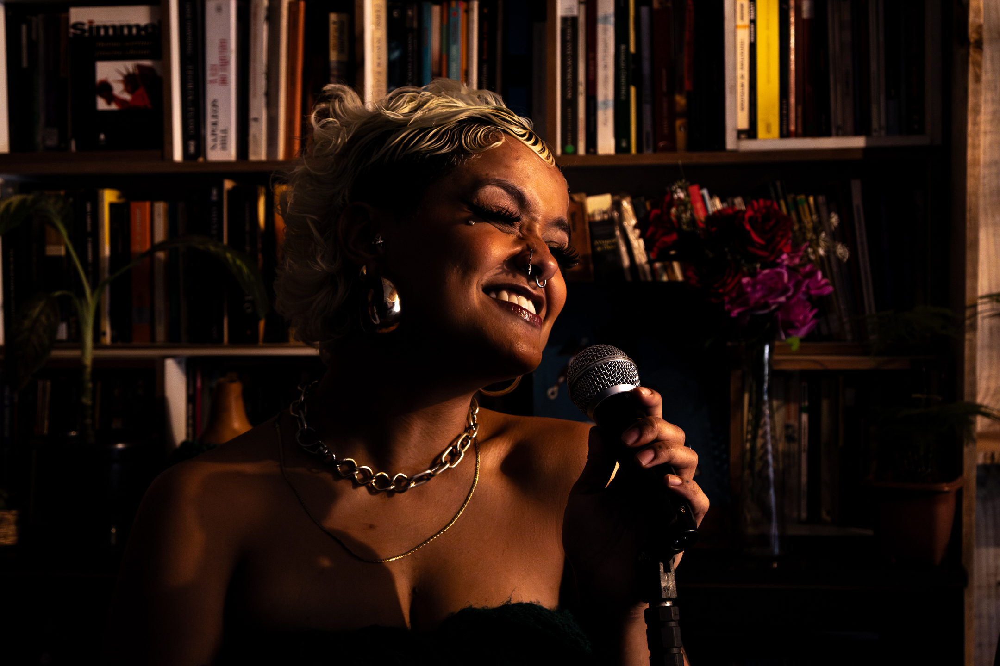
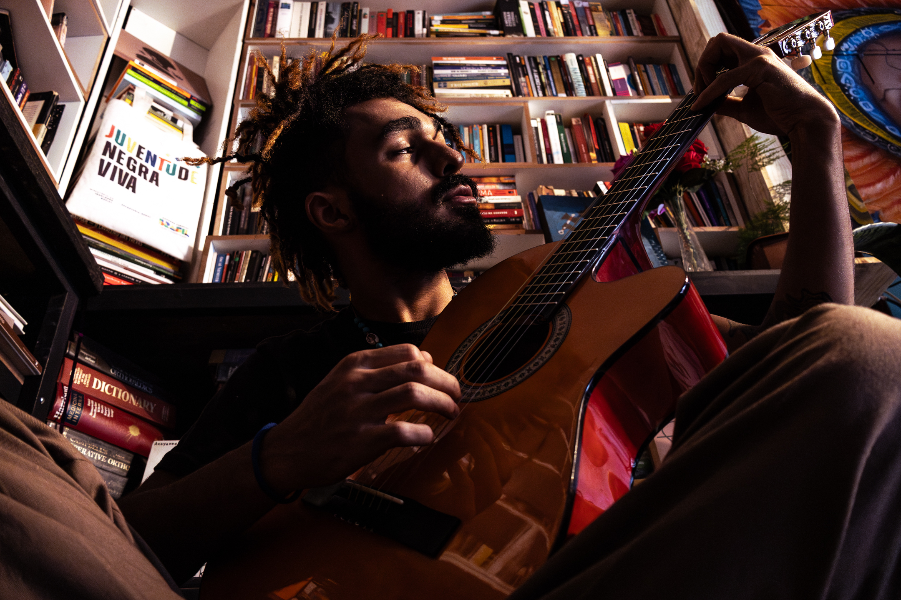
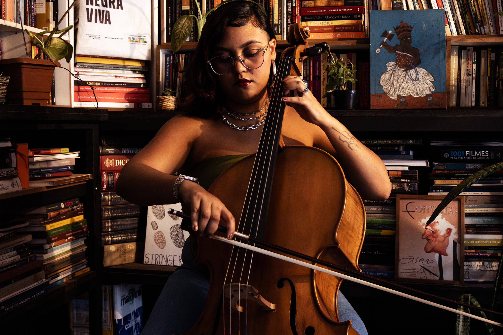
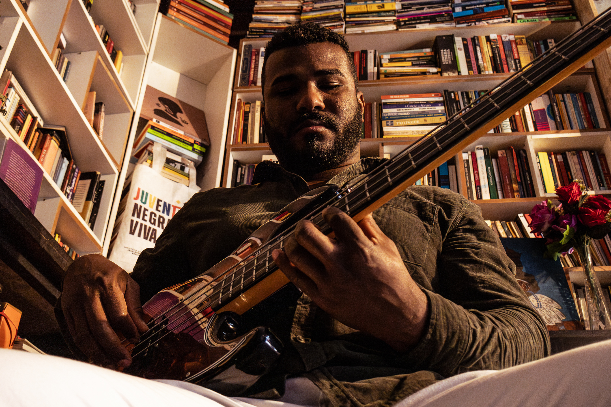

Luana Viana
Luana Viana, 21 anos, moradora da M Norte, descobriu sua paixão pela música na infância, incentivada por seus tios e pais. Com uma rica tradição artística na família, ela se destacou em eventos escolares e, paralelamente, trabalha como educadora social. Criada em Taguatinga Norte e Ceilândia, Luana é filha de mãe candanga e pai nordestino, o que traz uma fusão de ritmos à sua voz. Como vocalista da banda Liberdade Sinfonia, seu timbre marcante e originalidade refletem influências do rock e do samba, interpretando de forma única as composições autorais da banda.

Felipe Verissimo
Felipe Veríssimo começou a tocar violão aos 10 anos de forma autodidata e, aos 21 anos, já acumula vasta experiência artística. É um dos fundadores da banda Liberdade Sinfonia, onde se destaca como violonista, poeta e compositor. Suas letras, repletas de analogias e metáforas, exploram emoções profundas e são interpretadas com maestria pela vocalista Luana Viana. Felipe é um artista multifacetado cuja paixão pela música se reflete em sua performance e escrita, consolidando sua presença como uma força criativa no cenário musical.

Leh Sandes
Letícia Sandes, 21 anos, iniciou seus estudos musicais aos 11 anos na Escola Parque
Anísio Teixeira. Posteriormente, continuou sua formação na Escola de Música de
Brasília, onde aprimorou suas habilidades. Letícia dá aulas de violoncelo,
musicalização e teoria musical. Já participou de orquestras, incluindo o projeto
"Cazuza in Concert". Além disso, realiza apresentações em barzinhos e compõe
músicas autorais com a banda Liberdade Sinfonia. Atualmente, Letícia atua em um
projeto que une yoga e música, além de seguir com suas atividades na banda
Liberdade Sinfonia

Tarcisio Reis
Tarcisio Reis é músico e percussionista formado na Escola de Música de Brasília e cofundador do coletivo Cosmologia Preta. Natural de São Luís do Maranhão, teve seu primeiro contato com a percussão na infância, em casas de Tambores de Mina. Aos 14 anos, formou sua primeira banda e, desde então, expandiu seu talento artístico ao se envolver com teatro, contação de histórias e circo, atuando também como artista de rua em diversas regiões do Brasil

Mike Bass
Michael Silva, nascido em Bacabal, Maranhão, vê a música como uma forma de expressar suas ideias e compreender as relações interpessoais. Aos 15 anos, despertou seu interesse musical com a chegada do primeiro violão, influenciado pelo rock’n’roll de bandas como Nirvana e Legião Urbana. Em 2016, integrou a banda Cosmologia Preta como baixista e, em 2017, passou a fazer parte da banda Preto Cosmo. Desde então, Michael tem colaborado com diversos artistas no cenário musical de Brasília